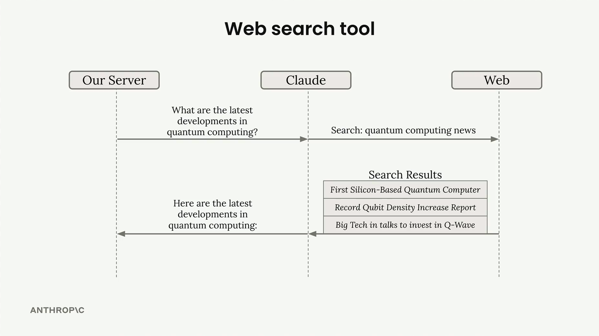
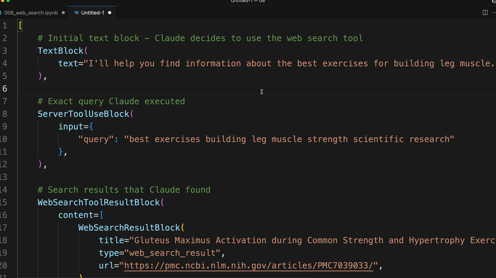
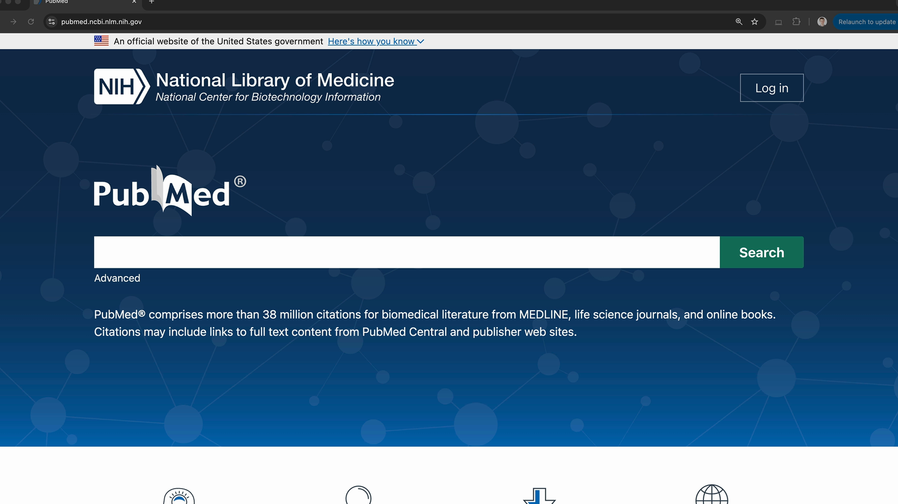
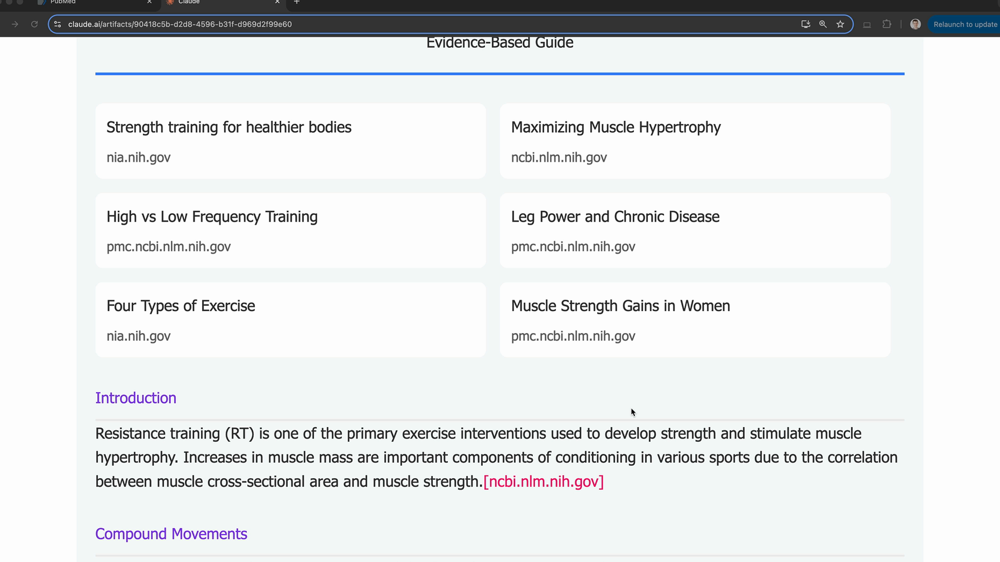

Веб-поиск
Чему научитесь
Видео 7:13 и текст урока
К концу урока вы сможете:
- подключить встроенный инструмент веб-поиска;
- ограничить поиск доменами и числом запросов;
- разобрать блоки ответа с результатами поиска и цитатами.
Видео и текст урока.
Смотреть урок на Skilljar The web search tool · 7:13Важно: прежде чем пользоваться веб-поиском, ваша организация должна включить его в настройках консоли. Настройка здесь: https://console.anthropic.com/settings/privacy
У Claude есть встроенный инструмент веб-поиска, с которым он может искать в интернете актуальную или специализированную информацию для ответа. В отличие от других инструментов, реализацию здесь писать не нужно: Claude выполняет весь поиск сам, вы лишь передаёте простую схему, чтобы его включить.

Подключаем веб-поиск
Чтобы использовать веб-поиск, создайте объект схемы с такими обязательными полями:
web_search_schema = {
"type": "web_search_20250305",
"name": "web_search",
"max_uses": 5
}
Поле max_uses ограничивает, сколько поисков может выполнить Claude. Claude может делать уточняющие поиски по первым результатам, так что это защищает от лишних вызовов. Один поиск возвращает несколько результатов, но Claude может решить, что нужны дополнительные поиски.
Как устроен ответ
Когда Claude пользуется веб-поиском, в ответе есть блоки нескольких типов:
- текстовые блоки — пояснения Claude о том, что он делает;
- ServerToolUseBlock — точный поисковый запрос, который использовал Claude;
- WebSearchToolResultBlock — результаты поиска;
- WebSearchResultBlock — отдельные результаты с заголовками и URL;
- цитаты (citations) — текст, подтверждающий утверждения Claude.

По структуре ответа видно, что именно искал Claude и какие источники нашёл. Цитаты содержат конкретный текст, на который Claude опирался, вместе с URL источников.
Ограничение доменов
Поиск можно ограничить определёнными доменами через поле allowed_domains. Это особенно полезно, когда нужны надёжные, авторитетные источники:
web_search_schema = {
"type": "web_search_20250305",
"name": "web_search",
"max_uses": 5,
"allowed_domains": ["nih.gov"]
}
Например, для вопросов о медицине или упражнениях ограничение доменами вроде PubMed (nih.gov) даёт информацию, основанную на исследованиях, а не на случайных блогах.

Как показывать результаты
Разные типы блоков ответа рассчитаны на определённое отображение в интерфейсе:
- текстовые блоки — как обычный текст;
- результаты поиска — списком источников вверху;
- цитаты — прямо в тексте, с доменом источника, заголовком страницы, URL и цитируемым текстом.

Такая структура помогает пользователям понять, как Claude пришёл к ответу, и делает источники прозрачными. Формат цитат ясно показывает, какая информация из какого источника, — это повышает доверие к ответам ИИ.
Где пригодится
Веб-поиск лучше всего подходит для:
- текущих событий и последних новостей;
- специализированной информации, которой нет в обучающих данных Claude;
- проверки фактов и поиска авторитетных источников;
- исследовательских задач, где нужна свежая информация.
Просто добавьте схему в массив tools при вызове API, и Claude сам решит, когда веб-поиск поможет ответить на вопрос.
Дальше
Блок пройден. В оригинале после этого урока идёт официальный квиз Skilljar — Quiz on tool use with Claude (7 вопросов, проходится на Skilljar). Проверить себя можно и нашим пробным экзаменом по инструментам.
Оригинал урока: The web search tool.